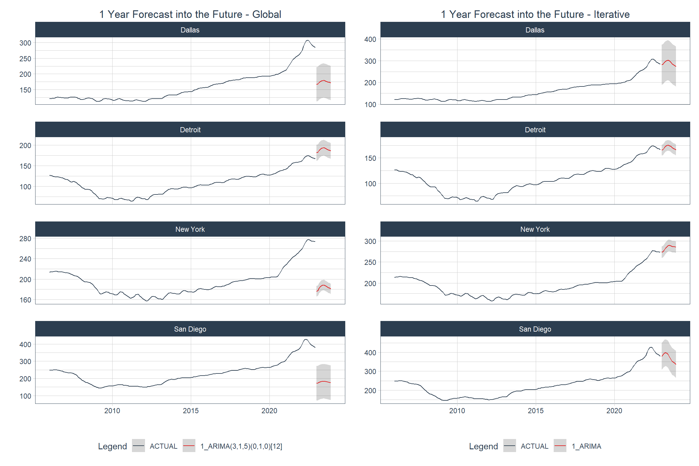

Forecasting with {modeltime} - Part III
Global vs. iterative modeling
In my previous post on this topic – Forecasting with {modeltime} - Part II – I performed a basic analysis of the Case-Shiller HPI time series for four U.S. cities (Dallas, Detroit, NYC, and San Diego). In this post I’m going to use some of the conclusions from that analysis to build ARIMA models using both a “global” modeling process and an “iterative” modeling process using the modeltime (Dancho 2023) and tidymodels (Kuhn and Wickham 2020) frameworks.
One of the distinguishing features of modeltime among other time series modeling frameworks is that it works very well with tidymodels. In fact, like tidymodels , modeltime serves as a platform for building consistent workflows using algorithms from other packages. modeltime builds on top of tidymodels to create a framework for dealing with the specific challenges of time series modelling and putting it all in a convenient, consistent API.
I’ll also be using tidyverse (Wickham et al. 2019) and gt (Iannone et al. 2024), per usual, and timetk (Dancho and Vaughan 2023). modeltime and timetk are developed and maintained by the good people at Business Science and tidyverse, tidymodels, and gt are developed and maintained by the generous folks at Posit.
Time Series Analysis Review
In the aforementioned time series analysis I found that the time series data for all four cities had a strong trend and a strong seasonal component. The trend was mostly muted by using a lag of 1 and the seasonal component of each series was generally muted by differencing twelve times, which makes sense given that the data are monthly (annual seasonal cycle). I was able to use these methods to greatly reduce the influence of non-stationary components according to the Augmented Dickey-Fuller test. The ACF and PACF plots led me to conclude to use an AR(3) and MA(5) ARIMA model. To deal with the seasonality I differenced the data twelve times. This will translate to a seasonal differencing component of (1) in the ARIMA model. In the previous post I wrote that I would be performing ARIMA rather than SARIMA… things change.
Differences between global and iterative modeling
Conventionally, time series models work by regressing the outcome – the most recent or future observation(s) – on previous observations of itself. We can refer to this as a “local” model because the variance in the data corresponds to only the single time series. A global model, on the other hand, pools the data to get a global variance and uses that information to make forecasts.
The primary advantages of a global model are speed and scalability. A second advantage is that each, individual forecasting model can “learn” from the history of the other time series that it’s pooled with. The disadvantage is that each individual model will likely be less accurate than if it was fit on an individual basis.
The advantage of modeling time series locally and iteratively is that this process most likely yields the highest quality fit and accuracy for each, individual model. The disadvantage is that as the number of models grows, so do the computational burden and processing time.
In two sections below I’ll demonstrate both processes with an ARIMA model using the parameters mentioned above and in the last section I’ll compare the results from both.
Building a global ARIMA model
As mentioned above, modeltime follows the Tidymodels convention. As such, it starts with partitioning data into training and testing data sets, continues with writing a recipe and model specification (and combining them in a workflow object), follows with fitting the model, and continues with model evaluation and selection.
For more information on the Tidymodels framework, please check out https://www.tmwr.org/.
Splitting data
For a global modeling process one can use the timetk::time_series_split() function which will create a list containing the data set, one vector of training data IDs and one of testing data IDs, and a 1-column data set containing all IDs.
The time_series_split() function uses 5 initial cross-validation periods by default with each one being progressively longer using a specified period of time as the assessment period. This assessment period is specified by the asses argument.
Code
List of 4
$ data : tibble [816 × 3] (S3: tbl_df/tbl/data.frame)
..$ city: chr [1:816] "Dallas" "San Diego" "New York" "Detroit" ...
..$ date: Date[1:816], format: "2006-01-01" "2006-01-01" ...
..$ hpi : num [1:816] 122 247 213 127 121 ...
$ in_id : int [1:720] 1 2 3 4 5 6 7 8 9 10 ...
$ out_id: int [1:96] 721 722 723 724 725 726 727 728 729 730 ...
$ id : tibble [1 × 1] (S3: tbl_df/tbl/data.frame)
..$ id: chr "Slice1"
- attr(*, "class")= chr [1:2] "ts_cv_split" "rsplit"Specifying a modeling workflow and fit the model
To specify the workflow I’ll first write the recipe…
One might be tempted to add lags and differences in the recipe, but this leads to a mess that’s really difficult to get out of. It all starts with the fact that a lagged and/or differenced variable will have a different name and will create missing values. I found that it’s best to handle these operations in the model specification.
Code
| variable | type | role | source |
|---|---|---|---|
| date | date | predictor | original |
| hpi | double, numeric | outcome | original |
… then the model object.
The model specification below will be used for both processes.
Code
- 1
- Call the API for building ARIMA models
- 2
- Set the AR order (p in conventional notation)
- 3
- Set the MA order (q in conventional notation)
- 4
- Set the degree of non-seasonal differencing (d in conventional notation)
- 5
- Set the degree of seasonal differencing (D in conventional notation)
- 6
- Set the length of the seasonal period
- 7
-
Set the modeling engine to
stats::arima()
ARIMA Regression Model Specification (regression)
Main Arguments:
seasonal_period = 12
non_seasonal_ar = 3
non_seasonal_differences = 1
non_seasonal_ma = 5
seasonal_differences = 1
Computational engine: arima Now that those are complete I can put them together in a workflow object.
Code
- 1
-
Create a container for a
workflowobject - 2
- Add the above model specification
- 3
- Add the recipe
══ Workflow ════════════════════════════════════════════════════════════════════
Preprocessor: Recipe
Model: arima_reg()
── Preprocessor ────────────────────────────────────────────────────────────────
0 Recipe Steps
── Model ───────────────────────────────────────────────────────────────────────
ARIMA Regression Model Specification (regression)
Main Arguments:
seasonal_period = 12
non_seasonal_ar = 3
non_seasonal_differences = 1
non_seasonal_ma = 5
seasonal_differences = 1
Computational engine: arima The final step here is to fit the model
Code
══ Workflow [trained] ══════════════════════════════════════════════════════════
Preprocessor: Recipe
Model: arima_reg()
── Preprocessor ────────────────────────────────────────────────────────────────
0 Recipe Steps
── Model ───────────────────────────────────────────────────────────────────────
Series: outcome
ARIMA(3,1,5)(0,1,0)[12]
Coefficients:
ar1 ar2 ar3 ma1 ma2 ma3 ma4 ma5
-1.0582 -0.9518 -0.8510 0.3737 0.1482 -0.2853 0.3877 0.5537
s.e. 0.0215 0.0290 0.0211 0.0424 0.0587 0.0406 0.0251 0.0324
sigma^2 = 1.659: log likelihood = -1186.55
AIC=2391.11 AICc=2391.37 BIC=2432.16Model evaluation
To deal with some of the characteristics specific to time series modeling, the modeltime framework uses conventions like the mdl_time_tbl (modeltime table) class to store a variety of elements of a time series model including accuracy metrics. This class is also used in model calibration and refitting for future forecasting. Here I’ll write the modeltime table for the global process.
I’m showing the model time table using a print() method rather than as a gt table because the list in the second column (list) would render in a cumbersome way.
# Modeltime Table
# A tibble: 1 × 3
.model_id .model .model_desc
<int> <list> <chr>
1 1 <workflow> ARIMA(3,1,5)(0,1,0)[12]This table contains the model and some additional information about it. I’ll now use this table to calibrate the global model to the individual time series with
Code
# Modeltime Table
# A tibble: 1 × 5
.model_id .model .model_desc .type .calibration_data
<int> <list> <chr> <chr> <list>
1 1 <workflow> ARIMA(3,1,5)(0,1,0)[12] Test <tibble [96 × 5]>With the calibration done I can now look at the accuracy of the model both at a global level and at an individual model level.
Getting the accuracy is done by the same function: modeltime_accuracy(). Whether it outputs global or local model accuracy is determined by the acc_by_id argument.
Global model accuracy
Local model accuracy
Code
| Accuracy Table | |||||||||
|---|---|---|---|---|---|---|---|---|---|
| .model_id | .model_desc | .type | city | mae | mape | mase | smape | rmse | rsq |
| 1 | ARIMA(3,1,5)(0,1,0)[12] | Test | Dallas | 23.44 | 8.36 | 4.48 | 8.85 | 27.63 | 0.86 |
| 1 | ARIMA(3,1,5)(0,1,0)[12] | Test | Detroit | 6.47 | 3.89 | 3.68 | 3.74 | 9.62 | 0.82 |
| 1 | ARIMA(3,1,5)(0,1,0)[12] | Test | New York | 3.80 | 1.45 | 1.60 | 1.43 | 5.15 | 0.95 |
| 1 | ARIMA(3,1,5)(0,1,0)[12] | Test | San Diego | 44.73 | 11.49 | 5.93 | 12.36 | 50.70 | 0.68 |
For comparison you can jump ahead to see the iterative model accuracy table 2.
Accuracy plot
Below is a visual representation of how the models performed against the test data (the last 2 years).
Code
arima_calib_global |>
modeltime_forecast(
new_data = testing(econ_splits_global),
actual_data = econ_data,
conf_by_id = TRUE,
keep_data = TRUE
) |>
group_by(city) |>
plot_modeltime_forecast(
.interactive = FALSE,
.title = "Forecast of Test Data - Global",
.facet_ncol = 2
) +
theme(plot.title = element_text(hjust = 0.5))- 1
- Call up the object containing the calibrated models
- 2
-
Call the
modeltime_forecast()function - 3
-
Specify the new data to test forecasts against; in this case it’s the testing split from the object created by
time_series_split() - 4
-
Specify what to use as the actual data; in this case it’s the original
econ_dataobject - 5
- Specify whether to generate confidence intervals by individual data series
- 6
-
Specify whether to keep the columns from the actual data; I specified
TRUEto keep the “city” column - 7
- Group by city to generate the forecasts by city
- 8
- Plot the forecasts as a stationary plot
For comparison you can jump ahead to see the iterative model accuracy plot 3.
Forecasting the future
The first step in getting forecasts for the future (with respect to the available data) is to refit the model using all of the training data after calibrating the model. That is done with the modeltime_refit() function for a global process.
Code
# Modeltime Table
# A tibble: 1 × 5
.model_id .model .model_desc .type .calibration_data
<int> <list> <chr> <chr> <list>
1 1 <workflow> ARIMA(3,1,5)(0,1,0)[12] Test <tibble [96 × 5]>The next step is to build a container for the data that has all the correct dates and ID columns. This is done with timetk::future_frame() .
future_frame() only generates one series per data set fed to it, so it’s really important to group the data before executing the function if you have multiple series or you’ll only get one series of future dates.
And finally one can generate a plot of the forecasts with modeltime_forecast() and plot the time series with plot_modeltime_forecast() . Better not forget to group by series!
Code
forecast_future_global <- arima_refit_global |>
modeltime_forecast(
new_data = arima_future_global,
actual_data = econ_data,
conf_by_id = TRUE
)
forecast_future_global |>
group_by(city) |>
plot_modeltime_forecast(
.interactive = FALSE,
.title = "1 Year Forecast into the Future - Global",
.facet_ncol = 2
) +
theme(plot.title = element_text(hjust = 0.5))Building an iterative ARIMA model
Now I’ll go through an iterative modeling workflow with the same model parameters for comparison. A key difference in the workflow is that the iterative model requires the construction of a nested table.
In modeltime iterative forecasting is called “Nested Forecasting”.
Splitting data
One of the big differences in building a nested model from building a global model in modeltime happens right at the beginning with splitting the data. With this method the future dates are added right up front with extend_timeseries() , the length of actual data is distinguished from that of future periods in nest_timeseries() and the train/test split is created with split_nested_timeseries() .
Code
# A tibble: 4 × 4
city .actual_data .future_data .splits
<chr> <list> <list> <list>
1 Dallas <tibble [204 × 2]> <tibble [12 × 2]> <split [180|24]>
2 Detroit <tibble [204 × 2]> <tibble [12 × 2]> <split [180|24]>
3 New York <tibble [204 × 2]> <tibble [12 × 2]> <split [180|24]>
4 San Diego <tibble [204 × 2]> <tibble [12 × 2]> <split [180|24]>Specifying a modeling workflow and fit the model
I’ll use the same model specification as above, but the recipe has to be specified to use the new splits object.
Code
| variable | type | role | source |
|---|---|---|---|
| date | date | predictor | original |
| hpi | double, numeric | outcome | original |
I’ll also create a new workflow object that just updates the previous one with the new recipe.
Code
══ Workflow ════════════════════════════════════════════════════════════════════
Preprocessor: Recipe
Model: arima_reg()
── Preprocessor ────────────────────────────────────────────────────────────────
0 Recipe Steps
── Model ───────────────────────────────────────────────────────────────────────
ARIMA Regression Model Specification (regression)
Main Arguments:
seasonal_period = 12
non_seasonal_ar = 3
non_seasonal_differences = 1
non_seasonal_ma = 5
seasonal_differences = 1
Computational engine: arima And now I’ll fit the model to all four cities iteratively using modeltime_nested_fit() .
Code
# Nested Modeltime Table
# A tibble: 4 × 5
city .actual_data .future_data .splits .modeltime_tables
<chr> <list> <list> <list> <list>
1 Dallas <tibble [204 × 2]> <tibble> <split [180|24]> <mdl_tm_t [1 × 5]>
2 Detroit <tibble [204 × 2]> <tibble> <split [180|24]> <mdl_tm_t [1 × 5]>
3 New York <tibble [204 × 2]> <tibble> <split [180|24]> <mdl_tm_t [1 × 5]>
4 San Diego <tibble [204 × 2]> <tibble> <split [180|24]> <mdl_tm_t [1 × 5]>Model evaluation
Local model accuracy
Code
| Accuracy Table | |||||||||
|---|---|---|---|---|---|---|---|---|---|
| city | .model_id | .model_desc | .type | mae | mape | mase | smape | rmse | rsq |
| Dallas | 1 | ARIMA | Test | 40.94 | 14.63 | 7.82 | 16.09 | 46.48 | 0.81 |
| Detroit | 1 | ARIMA | Test | 4.64 | 2.84 | 2.64 | 2.88 | 5.38 | 0.84 |
| New York | 1 | ARIMA | Test | 5.35 | 2.04 | 2.25 | 2.07 | 6.91 | 0.89 |
| San Diego | 1 | ARIMA | Test | 30.24 | 7.81 | 4.01 | 8.23 | 35.85 | 0.65 |
You can jump back to compare this with the global model accuracy table 1.
Accuracy plot
Below is a visual representation of how the models from the iterative modeling process performed against the test data (the last 2 years).
Code
You can jump back to compare this with the global model accuracy plot 1.
Forecasting the future
As with the global process above, the first step here will be to refit the model to the full training data set. Note that the iterative model process requires the use of modeltime_nested_refit() rather than modeltime_refit() .
modeltime has separate control_* functions for different purposes such as this case in which modeltime_refit() has control_refit() and modeltime_nested_refit() has control_nested_refit(). Make sure to use the correct one.
Code
# Nested Modeltime Table
# A tibble: 4 × 5
city .actual_data .future_data .splits .modeltime_tables
<chr> <list> <list> <list> <list>
1 Dallas <tibble [204 × 2]> <tibble> <split [180|24]> <mdl_tm_t [1 × 5]>
2 Detroit <tibble [204 × 2]> <tibble> <split [180|24]> <mdl_tm_t [1 × 5]>
3 New York <tibble [204 × 2]> <tibble> <split [180|24]> <mdl_tm_t [1 × 5]>
4 San Diego <tibble [204 × 2]> <tibble> <split [180|24]> <mdl_tm_t [1 × 5]>Since the future data container was already created in the splitting object, I can go right to forecasting the future here.
Code
Comparison
The two processes follow the same workflow, but have some key operational differences:
Different structures for the data split objects
The iterative workflow does not require calibration to the individual time series
Processing time
Below are two tables showing the processing times for fitting and refitting the global and iterative models.
Code
global_fit_time <- (global_fit_end - global_fit_start) |>
enframe(name = "metric") |>
mutate(value = as.numeric(value), model_process = "Global Fit") |>
drop_na()
iterative_fit_time <- (iterative_fit_end - iterative_fit_start) |>
enframe(name = "metric") |>
mutate(value = as.numeric(value), model_process = "Iterative Fit") |>
drop_na()
bind_rows(global_fit_time, iterative_fit_time) |>
ggplot(
aes(x = metric, y = value, fill = model_process, group = model_process)
) +
geom_col(position = "dodge") +
labs(
fill = NULL,
x = NULL,
y = "Time in seconds",
title = "Comparison of Model Fit Processing Times"
) +
scale_fill_manual(values = c("red", "blue")) +
theme_timetk +
theme(plot.title = element_text(hjust = 0.5))Code
global_refit_time <- (global_refit_end - global_refit_start) |>
enframe(name = "metric") |>
mutate(value = as.numeric(value), model_process = "Global Refit") |>
drop_na()
iterative_refit_time <- (iterative_refit_end - iterative_refit_start) |>
enframe(name = "metric") |>
mutate(value = as.numeric(value), model_process = "Iterative Refit") |>
drop_na()
bind_rows(global_refit_time, iterative_refit_time) |>
ggplot(
aes(x = metric, y = value, fill = model_process, group = model_process)
) +
geom_col(position = "dodge") +
labs(
fill = NULL,
x = NULL,
y = "Time in seconds",
title = "Model Refit Processing Times"
) +
scale_fill_manual(values = c("red", "blue")) +
theme_timetk +
theme(plot.title = element_text(hjust = 0.5))Besides these operational differences, the processes yield different levels of accuracy due to differences in the data on which they are trained (or to which they are initially fit). It’s also clear that the differences in models can yield some very big differences in forecasts. Global models have performed well in competitions that involved thousands of time series, so it’s possible that the variance across the four time series in this analysis is too high to make global modeling worthwhile.
Code
patchwork::wrap_plots(
forecast_future_global |>
group_by(city) |>
plot_modeltime_forecast(
.interactive = FALSE,
.title = "1 Year Forecast into the Future - Global",
.facet_ncol = 1
) +
theme(plot.title = element_text(hjust = 0.5)),
forecast_future_iterative |>
group_by(city) |>
plot_modeltime_forecast(
.interactive = FALSE,
.title = "1 Year Forecast into the Future - Global",
.facet_ncol = 1
) +
theme(plot.title = element_text(hjust = 0.5))
)
In the next post I’ll run a global modeling process with a few different algorithms and specifications to get a few hundred models and find which ones run best.